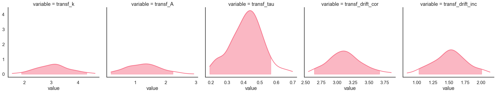
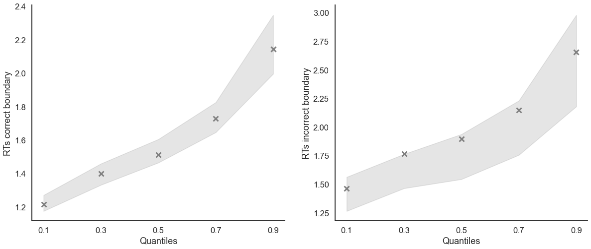
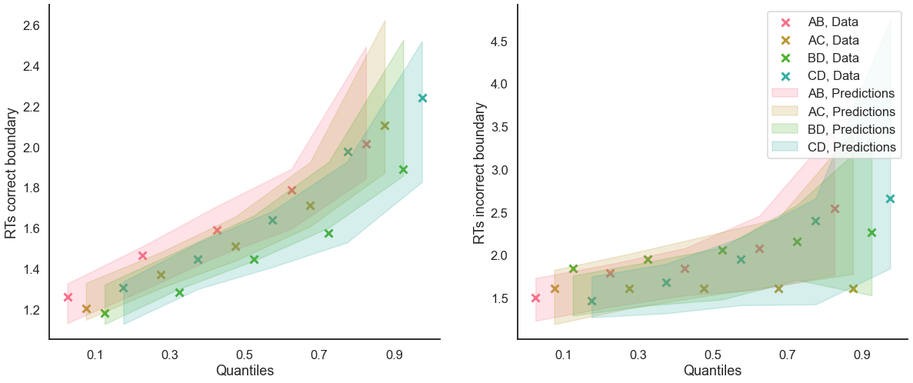

Fit the LBA on individual data
[1]:
import rlssm
import pandas as pd
Import individual data
[2]:
# import some example data:
data = rlssm.load_example_dataset(hierarchical_levels = 1)
data.head()
[2]:
| participant | block_label | trial_block | f_cor | f_inc | cor_option | inc_option | times_seen | rt | accuracy | |
|---|---|---|---|---|---|---|---|---|---|---|
| 0 | 3 | 1 | 1 | 50 | 41 | 3 | 1 | 1 | 2.456584 | 0 |
| 1 | 3 | 1 | 2 | 48 | 34 | 3 | 1 | 2 | 2.170168 | 1 |
| 2 | 3 | 1 | 3 | 52 | 46 | 4 | 2 | 1 | 1.494957 | 0 |
| 3 | 3 | 1 | 4 | 55 | 48 | 4 | 3 | 2 | 1.779351 | 0 |
| 4 | 3 | 1 | 5 | 48 | 52 | 4 | 3 | 3 | 1.853335 | 0 |
Initialize the model
[3]:
model = rlssm.LBAModel_2A(hierarchical_levels = 1)
Using cached StanModel
Fit
[4]:
# sampling parameters
n_warmup = 500
n_sampling = 500
n_chains = 2
n_thin = 5
[5]:
model_fit = model.fit(
data,
thin = n_thin,
iter_warmup=n_warmup,
iter_sampling=n_sampling,
chains = n_chains)
20:59:22 - cmdstanpy - INFO - CmdStan start processing
Fitting the model using the priors:
drift_priors {'mu': 1, 'sd': 5}
k_priors {'mu': 1, 'sd': 1}
sp_trial_var_priors {'mu': 0.3, 'sd': 1}
ndt_priors {'mu': 0, 'sd': 1}
drift_variability_priors {'mu': 1, 'sd': 1}
20:59:50 - cmdstanpy - INFO - CmdStan done processing.
20:59:50 - cmdstanpy - WARNING - Non-fatal error during sampling:
Exception: Exception: Exception: Phi: x is -nan, but must be not nan! (in '/home/andrei/PycharmProjects/rlssm/rlssm/stan_models/LBA_2A/LBA_2A.stan', line 39, column 10 to column 45) (in '/home/andrei/PycharmProjects/rlssm/rlssm/stan_models/LBA_2A/LBA_2A.stan', line 71, column 22 to column 81) (in '/home/andrei/PycharmProjects/rlssm/rlssm/stan_models/LBA_2A/LBA_2A.stan', line 161, column 5 to column 89)
Consider re-running with show_console=True if the above output is unclear!
Checks MCMC diagnostics:
n_eff / iter looks reasonable for all parameters
0 of 200 iterations saturated the maximum tree depth of 10 (0.0%)
E-BFMI indicated no pathological behavior
0.0 of 200 iterations ended with a divergence (0.0%)
Get rhat
[6]:
model_fit.rhat
[6]:
| rhat | variable | |
|---|---|---|
| name | ||
| lp__ | 1.003650 | lp__ |
| k | 0.998454 | k |
| sp_trial_var | 0.996282 | sp_trial_var |
| ndt | 1.012480 | ndt |
| drift_cor | 0.992578 | drift_cor |
| ... | ... | ... |
| log_lik[236] | 0.992739 | log_lik[236] |
| log_lik[237] | 1.014240 | log_lik[237] |
| log_lik[238] | 1.002040 | log_lik[238] |
| log_lik[239] | 0.994369 | log_lik[239] |
| log_lik[240] | 1.003460 | log_lik[240] |
1693 rows × 2 columns
Get WAIC
[7]:
model_fit.waic
[7]:
{'lppd': -122.79016478643794,
'p_waic': 3.9069219189241746,
'waic': 253.39417341072422,
'waic_se': 34.484284027933136}
Save results
[8]:
model_fit.to_pickle()
Saving file as: /home/andrei/PycharmProjects/rlssm/docs/notebooks/LBA_2A.pkl
Posteriors
[9]:
model_fit.samples.describe()
[9]:
| transf_k | transf_sp_trial_var | transf_ndt | transf_drift_cor | transf_drift_inc | transf_drift_variability | |
|---|---|---|---|---|---|---|
| count | 200.000000 | 200.000000 | 200.000000 | 200.000000 | 200.000000 | 200.000000 |
| mean | 1.497072 | 1.577284 | 0.615589 | 3.175861 | 1.706322 | 1.033466 |
| std | 0.681916 | 0.658089 | 0.112266 | 0.874656 | 0.509706 | 0.308777 |
| min | 0.490696 | 0.205277 | 0.157454 | 1.257090 | 0.602607 | 0.401229 |
| 25% | 0.927396 | 1.042838 | 0.540393 | 2.619733 | 1.334880 | 0.822739 |
| 50% | 1.384900 | 1.588635 | 0.629509 | 3.140250 | 1.692355 | 1.015335 |
| 75% | 1.949345 | 2.027640 | 0.699986 | 3.795478 | 2.081795 | 1.237730 |
| max | 3.544740 | 3.156850 | 0.808865 | 5.446150 | 3.018930 | 1.926370 |
[10]:
import seaborn as sns
sns.set(context = "talk",
style = "white",
palette = "husl",
rc={'figure.figsize':(15, 8)})
[11]:
model_fit.plot_posteriors(height=5, show_intervals='HDI');

Posterior predictives
Ungrouped
[12]:
pp = model_fit.get_posterior_predictives_df(n_posterior_predictives=100)
pp
[12]:
| variable | rt | ... | accuracy | ||||||||||||||||||
|---|---|---|---|---|---|---|---|---|---|---|---|---|---|---|---|---|---|---|---|---|---|
| trial | 1 | 2 | 3 | 4 | 5 | 6 | 7 | 8 | 9 | 10 | ... | 231 | 232 | 233 | 234 | 235 | 236 | 237 | 238 | 239 | 240 |
| sample | |||||||||||||||||||||
| 1 | 1.183546 | 1.364944 | 1.616725 | 1.605419 | 1.089678 | 1.400675 | 1.135932 | 1.123553 | 1.084159 | 1.255094 | ... | 1.0 | 1.0 | 1.0 | 1.0 | 1.0 | 0.0 | 1.0 | 1.0 | 1.0 | 1.0 |
| 2 | 1.576325 | 1.519411 | 1.692919 | 1.670994 | 1.141044 | 1.170342 | 1.090486 | 1.106510 | 1.419247 | 1.113583 | ... | 0.0 | 1.0 | 1.0 | 1.0 | 1.0 | 1.0 | 1.0 | 1.0 | 1.0 | 1.0 |
| 3 | 1.425449 | 1.163523 | 1.368799 | 1.325493 | 1.311212 | 1.194266 | 1.165015 | 1.466742 | 1.149893 | 1.287333 | ... | 1.0 | 1.0 | 1.0 | 1.0 | 1.0 | 1.0 | 1.0 | 1.0 | 1.0 | 1.0 |
| 4 | 1.284083 | 1.343105 | 1.420682 | 1.266277 | 1.405464 | 1.415870 | 1.267516 | 1.428130 | 1.343332 | 1.305044 | ... | 1.0 | 1.0 | 1.0 | 1.0 | 1.0 | 1.0 | 1.0 | 1.0 | 1.0 | 1.0 |
| 5 | 1.504018 | 1.466872 | 1.538393 | 1.160328 | 1.164173 | 1.544946 | 1.325153 | 1.642987 | 1.372256 | 1.457608 | ... | 1.0 | 1.0 | 1.0 | 1.0 | 1.0 | 1.0 | 1.0 | 1.0 | 0.0 | 0.0 |
| ... | ... | ... | ... | ... | ... | ... | ... | ... | ... | ... | ... | ... | ... | ... | ... | ... | ... | ... | ... | ... | ... |
| 96 | 1.219824 | 1.418087 | 1.118213 | 1.238899 | 1.128005 | 1.232200 | 1.561760 | 1.178684 | 1.483256 | 1.302946 | ... | 1.0 | 1.0 | 1.0 | 1.0 | 1.0 | 1.0 | 1.0 | 1.0 | 1.0 | 1.0 |
| 97 | 1.636007 | 1.492624 | 1.118810 | 1.139576 | 1.640280 | 1.371594 | 1.079900 | 1.402737 | 1.441459 | 1.536818 | ... | 1.0 | 1.0 | 1.0 | 1.0 | 1.0 | 1.0 | 1.0 | 1.0 | 1.0 | 1.0 |
| 98 | 1.249828 | 1.531754 | 1.333652 | 1.258257 | 1.271951 | 1.389582 | 1.405658 | 1.394606 | 1.456438 | 1.221342 | ... | 1.0 | 1.0 | 1.0 | 1.0 | 1.0 | 1.0 | 1.0 | 1.0 | 1.0 | 1.0 |
| 99 | 1.122231 | 1.598481 | 1.309456 | 1.485651 | 1.564683 | 1.405006 | 1.553835 | 1.367322 | 1.170697 | 1.609261 | ... | 1.0 | 1.0 | 1.0 | 1.0 | 1.0 | 1.0 | 1.0 | 1.0 | 1.0 | 1.0 |
| 100 | 1.484311 | 1.245769 | 1.362472 | 1.229014 | 1.520313 | 1.308754 | 1.256234 | 1.314763 | 1.429952 | 1.381695 | ... | 1.0 | 1.0 | 1.0 | 1.0 | 1.0 | 1.0 | 1.0 | 1.0 | 1.0 | 1.0 |
100 rows × 480 columns
[13]:
pp_summary = model_fit.get_posterior_predictives_summary(n_posterior_predictives=100)
pp_summary
[13]:
| mean_accuracy | mean_rt | skewness | quant_10_rt_incorrect | quant_30_rt_incorrect | quant_50_rt_incorrect | quant_70_rt_incorrect | quant_90_rt_incorrect | quant_10_rt_correct | quant_30_rt_correct | quant_50_rt_correct | quant_70_rt_correct | quant_90_rt_correct | |
|---|---|---|---|---|---|---|---|---|---|---|---|---|---|
| sample | |||||||||||||
| 1 | 0.908333 | 1.351170 | 0.081850 | 1.370503 | 1.402379 | 1.456921 | 1.516156 | 1.605373 | 1.089305 | 1.202466 | 1.318360 | 1.442767 | 1.611225 |
| 2 | 0.937500 | 1.369974 | 0.083806 | 1.451170 | 1.474599 | 1.504709 | 1.549811 | 1.624481 | 1.134182 | 1.238473 | 1.341397 | 1.470029 | 1.622969 |
| 3 | 1.000000 | 1.320460 | -0.054377 | NaN | NaN | NaN | NaN | NaN | 1.199565 | 1.256421 | 1.316261 | 1.390138 | 1.440001 |
| 4 | 1.000000 | 1.370931 | -0.090826 | NaN | NaN | NaN | NaN | NaN | 1.289254 | 1.326916 | 1.375670 | 1.416675 | 1.448248 |
| 5 | 0.879167 | 1.338468 | 0.091321 | 1.236310 | 1.294457 | 1.333365 | 1.400824 | 1.499225 | 1.045345 | 1.182412 | 1.336481 | 1.477776 | 1.635398 |
| ... | ... | ... | ... | ... | ... | ... | ... | ... | ... | ... | ... | ... | ... |
| 96 | 0.987500 | 1.355308 | 0.078612 | 1.441660 | 1.461455 | 1.481250 | 1.540897 | 1.600544 | 1.115122 | 1.235986 | 1.334987 | 1.469866 | 1.609801 |
| 97 | 0.929167 | 1.325799 | 0.131479 | 1.334706 | 1.355270 | 1.388523 | 1.420327 | 1.531333 | 1.093944 | 1.195269 | 1.296096 | 1.430200 | 1.577682 |
| 98 | 1.000000 | 1.301221 | 0.043355 | NaN | NaN | NaN | NaN | NaN | 1.107730 | 1.211163 | 1.294686 | 1.393938 | 1.493629 |
| 99 | 0.983333 | 1.366179 | 0.046120 | 1.545306 | 1.549452 | 1.556749 | 1.563695 | 1.565733 | 1.139000 | 1.260973 | 1.354378 | 1.459849 | 1.583354 |
| 100 | 1.000000 | 1.398333 | 0.009498 | NaN | NaN | NaN | NaN | NaN | 1.244427 | 1.313766 | 1.396258 | 1.486090 | 1.551681 |
100 rows × 13 columns
[14]:
model_fit.plot_mean_posterior_predictives(n_posterior_predictives=100, figsize=(20,8), show_intervals='HDI');

[15]:
model_fit.plot_quantiles_posterior_predictives(n_posterior_predictives=100, kind='shades');

Grouped
[16]:
import numpy as np
[17]:
# Define new grouping variables, in this case, for the different choice pairs, but any grouping var can do
data['choice_pair'] = 'AB'
data.loc[(data.cor_option == 3) & (data.inc_option == 1), 'choice_pair'] = 'AC'
data.loc[(data.cor_option == 4) & (data.inc_option == 2), 'choice_pair'] = 'BD'
data.loc[(data.cor_option == 4) & (data.inc_option == 3), 'choice_pair'] = 'CD'
data['block_bins'] = pd.cut(data.trial_block, 8, labels=np.arange(1, 9))
[18]:
model_fit.get_grouped_posterior_predictives_summary(
grouping_vars=['block_label', 'choice_pair'],
quantiles=[.3, .5, .7],
n_posterior_predictives=100)
[18]:
| mean_accuracy | mean_rt | skewness | quant_30_rt_incorrect | quant_30_rt_correct | quant_50_rt_incorrect | quant_50_rt_correct | quant_70_rt_incorrect | quant_70_rt_correct | |||
|---|---|---|---|---|---|---|---|---|---|---|---|
| block_label | choice_pair | sample | |||||||||
| 1 | AB | 1 | 1.0 | 1.346622 | 0.038190 | NaN | 1.246052 | NaN | 1.343261 | NaN | 1.459109 |
| 2 | 0.9 | 1.396116 | -0.008277 | 1.484449 | 1.264219 | 1.488372 | 1.341708 | 1.492294 | 1.504826 | ||
| 3 | 1.0 | 1.347069 | -0.271303 | NaN | 1.297130 | NaN | 1.345260 | NaN | 1.416530 | ||
| 4 | 1.0 | 1.367459 | -0.273305 | NaN | 1.339520 | NaN | 1.374498 | NaN | 1.411171 | ||
| 5 | 0.8 | 1.393105 | -0.042693 | 1.335630 | 1.271462 | 1.344036 | 1.392219 | 1.370857 | 1.549008 | ||
| ... | ... | ... | ... | ... | ... | ... | ... | ... | ... | ... | ... |
| 3 | CD | 96 | 0.8 | 1.347445 | 0.230255 | 1.463140 | 1.142039 | 1.466645 | 1.260682 | 1.475158 | 1.372035 |
| 97 | 0.9 | 1.317313 | -0.431412 | 1.450728 | 1.186740 | 1.461376 | 1.319384 | 1.472024 | 1.458631 | ||
| 98 | 1.0 | 1.314295 | 0.297978 | NaN | 1.240378 | NaN | 1.288117 | NaN | 1.377662 | ||
| 99 | 1.0 | 1.296240 | 0.508829 | NaN | 1.180083 | NaN | 1.251044 | NaN | 1.395654 | ||
| 100 | 1.0 | 1.434916 | -0.311766 | NaN | 1.351149 | NaN | 1.460699 | NaN | 1.526745 |
1200 rows × 9 columns
[19]:
model_fit.get_grouped_posterior_predictives_summary(
grouping_vars=['block_bins'],
quantiles=[.3, .5, .7],
n_posterior_predictives=100)
[19]:
| mean_accuracy | mean_rt | skewness | quant_30_rt_incorrect | quant_30_rt_correct | quant_50_rt_incorrect | quant_50_rt_correct | quant_70_rt_incorrect | quant_70_rt_correct | ||
|---|---|---|---|---|---|---|---|---|---|---|
| block_bins | sample | |||||||||
| 1 | 1 | 0.966667 | 1.334242 | 0.211127 | 1.388847 | 1.206436 | 1.388847 | 1.354761 | 1.388847 | 1.424085 |
| 2 | 0.933333 | 1.401069 | -0.052059 | 1.459300 | 1.317267 | 1.461746 | 1.412713 | 1.464193 | 1.482805 | |
| 3 | 1.000000 | 1.322158 | -0.054984 | NaN | 1.266166 | NaN | 1.309195 | NaN | 1.383934 | |
| 4 | 1.000000 | 1.371884 | -0.113772 | NaN | 1.341697 | NaN | 1.362876 | NaN | 1.420300 | |
| 5 | 0.833333 | 1.367192 | -0.028940 | 1.278983 | 1.207284 | 1.395487 | 1.378716 | 1.401898 | 1.537772 | |
| ... | ... | ... | ... | ... | ... | ... | ... | ... | ... | ... |
| 8 | 96 | 1.000000 | 1.352677 | 0.023876 | NaN | 1.207528 | NaN | 1.344366 | NaN | 1.503778 |
| 97 | 0.933333 | 1.310182 | 0.130377 | 1.472385 | 1.146520 | 1.489642 | 1.257619 | 1.506899 | 1.452143 | |
| 98 | 1.000000 | 1.297683 | 0.040928 | NaN | 1.235014 | NaN | 1.297713 | NaN | 1.348092 | |
| 99 | 1.000000 | 1.344417 | 0.110634 | NaN | 1.212390 | NaN | 1.379767 | NaN | 1.431506 | |
| 100 | 1.000000 | 1.394485 | 0.357007 | NaN | 1.345426 | NaN | 1.358845 | NaN | 1.433055 |
800 rows × 9 columns
[20]:
model_fit.plot_mean_grouped_posterior_predictives(grouping_vars=['block_bins'],
n_posterior_predictives=100,
figsize=(20,8));

[21]:
model_fit.plot_quantiles_grouped_posterior_predictives(
n_posterior_predictives=100,
grouping_var='choice_pair',
kind='shades',
quantiles=[.1, .3, .5, .7, .9]);
